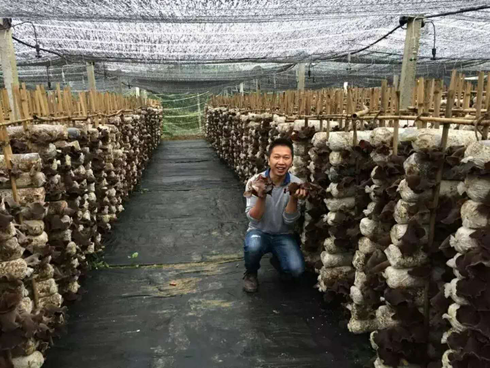

广西盈垦现代农业有限责任公司成立于2013年10月16日，注册资金200万元。目前拥有两处生产基地，一处加工厂，三个销售办事处，产品销售覆盖广西各大城市，辐射珠三角，是一家集木耳种植，加工，销售于一体的现代化农业企业。 公司秉承自然，健康，优质，高效的种植加工理念和细致入微的销售服务理念，经过多年努力，盈垦牌精品木耳丝在广西区内市场得到广泛的认可。2017年在市领导的大力支持下进入百色市科技企业孵化基地，生产加工环境获得的巨大改善，销售业绩也获得了很大的提升，进一步巩固了市场地位。 未来，我们将引入互联网销售模式，建立以销售APP为主要交易平台的互联网销售配送体系，提高效率，降低成本，提高用户体验。形成农业生产加工和互联网销售的相互融合的产业链优势，开拓更加广阔的市场。 科技改变未来！
盈垦牌毛木耳生产基地坐落于广西百色市右江区大楞乡大王玲境内。具有国家级4A景区、中国原始森第一漂美誉的大王岭拥有充足、清洁的水土资源，以及清新、怡人的气候环境，如此独特的地理优势造就了自然、健康的盈垦牌毛木耳高品质口感。盈垦牌毛木耳在培育、加工生产、包装方面严格执行各环节的标准，不添加任何违禁品及添加剂。毛木耳粗纤维含量较高，这些纤维素对人体内许多营养物质的消化、吸收和代谢有很好的促进作用。并且在耳背的绒毛中含有丰富的多糖类抗癌物质。盈垦毛木耳脆嫩可口，可以凉拌、清炒、爆汤等，深受消费者的喜爱。

广西盈垦现代农业有限责任公司
地址：广西百色市高新区六塘工业园科技企业孵化基地二栋四层
电话：0776-222598